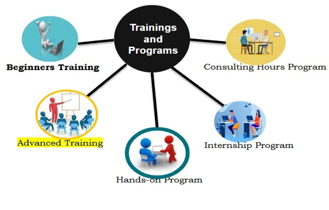

From Beginner to Expert: Your Journey in SAP Analytics and Planning
Build practical skills with a clear path from foundational learning to project delivery and consulting.
-
November 18, 2026
A learning journey built for real-world success
LearningBecoming an expert does not happen overnight. It is a journey built one meaningful step at a time, with the right training, a supportive learning environment, practical experience, guidance, and consistent encouragement.

At SAPXG, we help you build that journey in SAP Analytics and Planning, including SAP Analytics Cloud, SAP Datasphere, SAP HANA, and BW/BI. Our programs are designed to connect learning with the skills and confidence needed in real projects.
Start with the fundamentals. Beginners Training introduces the core concepts and gives you a strong foundation. Advanced Training then deepens your knowledge and helps you apply those concepts to realistic business requirements.
Turn knowledge into capability. The Hands-on Program gives you practical experience, while the Internship Program takes you through development activities and live project scenarios. These experiences help you understand not just how a solution works, but how it is designed, built, and delivered.
Grow into consulting. Through our Consulting Hours Program, experienced learners and project teams can get expert support for complex and challenging requirements throughout project development.
Whether you are taking your first step or looking to strengthen your project and consulting skills, the path is clear: Beginners Training → Advanced Training → Hands-on Program → Internship Program → Consulting Hours Program.
We are committed to facilitating learning and growing a strong network of SAP Analytics and Planning professionals. Reach out to us or join our WhatsApp community groups to begin your next step.